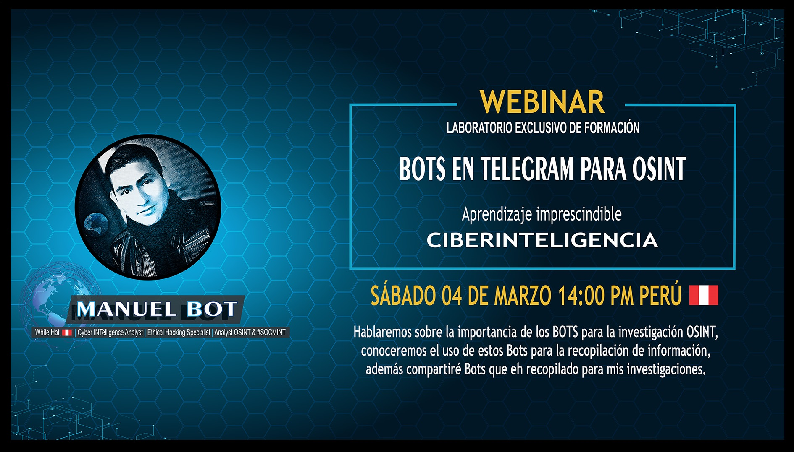
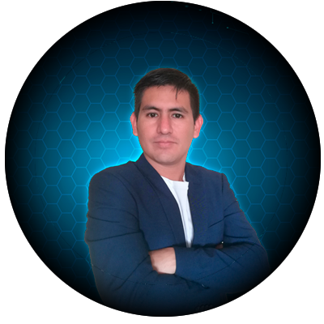

Webinar 'BOTS EN TELEGRAM PARA OSINT'

Aprenda sobre el uso de Bots de Telegram para sus investigaciones OSINT,
aprenda sobre la importancia de los Bots de Telegram para la recopilación de información en Fuentes Abiertas,
entre otros temas más, con este único evento exclusivo de formación.
aprenda sobre la importancia de los Bots de Telegram para la recopilación de información en Fuentes Abiertas,
entre otros temas más, con este único evento exclusivo de formación.
Fecha y Hora del Evento:
⭐ SÁBADO 04 DE MARZO 14:00 PM (HORA PERÚ) LO QUE APRENDERÁS:
📘 Conocer la importancia de los Bots de Telegram para las investigaciones OSINT.
📘 Conocer y Aprender el uso de los Bots de Telegram para llevar a cabo una excelente investigación.
📘 Usar un surtido de Bots interesantes para la búsqueda de información
📘 Facilitación de grupos y canales que se dedican a difundir información relacionada a OSINT
📘 Otros de interés.
INCLUYE:
🔎 Más de 10 Bots de Telegram para llevar a cabo sus investigaciones OSINT.
🔎 Más de 10 canales y grupos dedicados exclusivamente al OSINT.
🔎 Acceso a información exclusiva de Manuel Bot por haberse suscrito al Webinar.
REQUISITOS:
👨🏻💻 Crear un correo electróncio GMAIL para el acceso al Webinar (Opcional).
👨🏻💻 Contar con una computadora o equipo portátil para el desarrollo del Laboratorio (Opcional).
Descripción:
La aplicación de mensajería de Telegram es hoy una de las más utilizadas.
Su popularidad creció gracias a la privacidad, seguridad que brinda dicha aplicación y a la particular característica de Telegram,
que permite utilizar automatizaciones creadas por terceros (Bots), estas aplicaciones se ejecutan dentro de la aplicación de mensajería
sin necesidad de instalar nada, ya que estas se agregan como si se tratara de un contacto más con el que mantenemos una conversación.
Estas acciones están totalmente automatizadas y están preparadas para dar respuesta dependiendo de la orden que les demos,
puesto que no hay nadie detrás de ellas.
Hoy en día, estos robots (Bots), nos ha facilitado la vida, en especial a nosotros como investigadores y especialistas en la búsqueda
de información de fuentes abiertas (OSINT) para el desarrollo exitoso de múltiples tareas, así como el ahorro de tiempo para obtener
cierta información de un determinado dato (correo electrónico, username, imagen, entre otros). Por ejemplo, en Telegram puedes usar estos
Bots para encontrar las diversas redes sociales vinculadas a un determinado correo electrónico, así como también buscar posibles
contraseñas expuestas de un determinado correo electrónico y muchas cosas más.
contraseñas expuestas de un determinado correo electrónico y muchas cosas más.
El punto radica en que no todo usuario de dicha aplicación cuenta con estos Bots, para la búsqueda de información de Fuentes Abiertas
(OSINT), ni tampoco sabe configurar la privacidad y seguridad de la misma, ni mucho menos sabe que canales o grupos existen en Telegram
que se dedican exclusivamente al OSINT, a raíz de esto es que surgió la necesidad de enseñar todos estos temas a través de este Webinar
intensivo denominado 'BOTS EN TELEGRAM PARA OSINT'.
Además, en este Webinar intensivo te enseñaremos no solo como usar estos Bots más populares que hoy existen, sino que también te
facilitaremos algunos grupos y/o canales que de forma diaria vienen realizando publicaciones, investigaciones recientes en relación al
OSINT, claro que estos canales en su mayoría son de origen Ruso, pero con la configuración de ‘Traducción’ en Telegram, usted podrá
entenderlos, sin el requisito de que tengas algún curso adicional para entender estos idiomas.
Yo soy Manuel Travezaño (conocido como 'Manuel Bot'), de nacionalidad Peruano, Analista e investigador de Ciberinteligencia, Docente
y Ponente en inteligencia en Fuentes Abiertas (OSINT), desarrollador de Herramientas Open Source para OSINT, creador de diversas
Plataformas OSINT para la investigación para SOCMINT, con más de 05 años de experiencia en el cargo de Analista Táctico en
Ciberinteligencia en la Policía de Perú y que a la fecha eh dado disertaciones en eventos Nacionales como internacionales como
Especialista en investigaciones OSINT. Con toda esta experiencia en investigación OSINT, es que he creado este Webinar exclusivo
especialmente para ti.
¡Empieza a aprender ya mismo!
¿Para quién es este curso?
⭐ Usuarios que quieran aprender todo sobre investigaciones OSINT a través de Bots de Telegram
¿Cómo puedo adquirir el acceso a este Webinar?
📘 PREINSCRIPCIÓN: (HASTA EL MIÉRCOLES 01 DE MARZO DEL 2023)Nacionales (Perú): S/ 20.00.
Internacionales: US$ 15.00. (Aplicado el 30% de Descuento)
📘 INSCRIPCIÓN: (JUEVES 02 A SÁBADO 04 DE MARZO DEL 2023)
Nacionales (Perú): S/ 25.00.
Internacionales: US$ 20.00.
INSCRIBIRSE:
📘 MÉTODOS DE PAGO:Nacionales (Perú): Pago o transferencia Interbancario.
Internacionales: Pago vía Paypal:
CIERRE DE INSCRIPCIONES:
El cierre de inscripciones para este webinar, será hasta el mismo día SÁBADO 04 DE MARZO DEL 2023 - 10:00 AM (HORA PERÚ). INSCRIBIRSE:
¡Nos vemos en el WEBINAR!
Atentamente:
